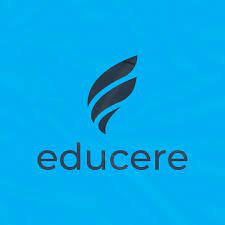

Somos alunos do Projeto de Iniciação Tcenologica da Fundação Educere
Este site foi criado com intuito de aprendizado, para testar tudo que já haviamos estudado e colocar em pratica. Então fomos desafiados a fazer uma copia do trello, trello e um software gerenciador de tarefas
Este e a minha copia do trello, espero que gostem.